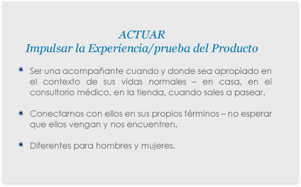
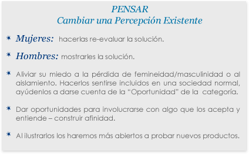
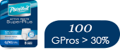
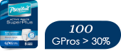
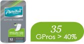
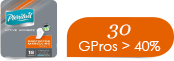
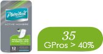
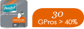

Fundamentales
Estrategias de Marca
-
1. Acelerar la penetración de categoría entre los “Spirited Strivers” entregando soluciones para cada nivel de incontinencia con confort, discreción y diseño que restaure la normalidad y otorgue confianza para:
- a. Ser los líderes en la categoría a través de pruebas de producto.
- b. Desarrollar una estrategia multi-nivel bajo los pilares de arquitectura “Social” y “Comodidad” (Sabbel & Lycra).
- c. Acelerar LIMO en LAO. Lanzamiento en Brasil en el año 2015.
-
2. Incrementar la penetración de marca entre los cuidadores de adultos inactivos otorgando una protección superior, preservando así la dignidad de la persona a la que están cuidando y obteniendo la confianza de saber que están dando el mejor cuidado posible.
- a. Renovar el portafolio de Pañales para adultos, impulsando la prueba del producto.
- b. Establecer una estrategia de portafolio multiniveles de acuerdo a la región.
- c. Desarrollar “Claims” poderosos para Plenitud Protect & Classic.
- d. Lanzar HIP para acelerar la migración de pañales para adultos a ropa interior con protección.
-
3. Incrementar la penetración de las toallas húmedas otorgando una mejor experiencia al consumidor.
- a. Renovar nuestra actual toalla húmeda (de un conteo de 40 a 50 con un mejorado sistema de dispensado).
- b. Desarrollar un conteo pequeño para actividades promocionales con Pañales para adultos (1 pañal – 1 toalla húmeda).
- c. Explorar una solución con material COFORM para tener una toalla húmeda Premium.
- 4. Sostener los márgenes de crecimiento actuales combinando crecimiento acelerado de los ingresos, estrategia de precios y eficiencia en costos.


Fundamentales
Perfil de Marca
-

Objetivo estratégico
Hombres y mujeres que no desean los retos físicos y emocionales que conllevan el paso de los años comprometan sus deseos de independencia, gusto por la vida y relaciones.
-
Promesa Funcional
Diseñado para promover normalidad.
-
Promesa Emocional
Confianza renovada.
-
Promesa de Marca
Confianza para Vivir plenamente.
-
Performance
Reflejar la energía y personalidad de los “Spirited Strivers”.
- Diseño discreto e intuitivo.
- Fácil de usar y confortable.
- Fuente de información proactiva.
-
Valores e Imágenes
Optimismo – Vitalidad - Confiabilidad.
Fundamentales
Perfil de Marca
¿Quién es Quién?

-
Prospectos Primarios
Hombres y mujeres activos de 55 años a más que sufren de incontinencia moderada y que desean mantener sus estilos de vida de forma activa y buscan lo esencial para que los ayuden en sus actividades diarias y así continuar sus vidas con normalidad.
-
Objetivo Estratégico
Todos los hombres y mujeres de 60 años a más que tienen necesidades de higiene y cuidado personal específicas de su edad y que necesitan soluciones específicas para satisfacerlas. Ellos sienten que la mayoría de marcas no se dirigen directamente a ellos.
-
Objetivo Amplio
Adultos, hombres y mujeres que tienen necesidades higiénicas y de cuidado personal y que buscan una solución específica y de performance excepcional que cumpla sus expectativas.
Fundamentales
Posicionamiento Local
-
Público Objetivo
Para hombres y mujeres activos de 55 años a más, que experimentan retos físicos y emocionales relacionados con su edad pero no quieren que su deseo de una vida plena se vea comprometida.

-
Necesidad Básica
Quienes necesitan soluciones dignas para involucrarse en un vida activa.
-
Marca
Plenitud.
-
Marco de referencia
Que vaya más allá de las soluciones actuales en el mercado, por ejemplo otros productos (pañales para adulto, toallas femeninas, protectores diarios, papel higiénico, pañales para bebés, soluciones caseras y otros mecanismos para lidiar con esta situación.
-
Punto de diferencia
Ofrecer un diseño superior para hacer posible un estilo de vida normal.
-
Soporte
Plenitud provee la protección necesaria con discreción y confort.
Fundamentales
Historia de la Marca
La vida es un cambio constante. Los años pasan, nosotros crecemos y maduramos. Los años de madurez son para sacarles ventaja. Tenemos más experiencia, más conocimiento, más sabiduría y más tiempo para disfrutar de nuestros seres queridos.
También sabemos que a medida que la edad avanza comenzamos a experimentar ciertas limitaciones físicas que podrían afectar nuestra dignidad y confianza, previniéndonos de ciertas cosas que nos gustaría hacer.
Plenitud nos ayuda a lidiar con estos cambios de una manera positiva, porque sabemos que los adultos activos necesitan seguir sintiéndose seguros, para que nada cambie en su modo de vida.
Plenitud ofrece soluciones innovadoras más allá de las que se encuentran en el mercado actualmente: cada producto es minuciosamente desarrollado y cada detalle está pensado de tal manera que el adulto mayor pueda continuar llevando una vida activa y disfrutar la vida al máximo.
Siendo productos premium, Plenitud ofrece la protección, confort y discreción necesarias para sentir más confianza en cualquier situación.
PLENITUD.
¡¡¡Vive la vida al máximo!!!
Fundamentales
Perfil de Tareas
- Construir Conciencia
- Cambiar percepción actual
- Impulsar la experimentación del producto


Fundamentales
Desafío de Marketing
Entonces, ¿qué necesitamos hacer?
ALCANZAR E INFORMAR
- 
- 
Fundamentales
Ranking de Canales
Dividido en 2 sub-targets

Leve & Muy Leve
Adultos activos (hombres) de 40 a 65 años de edad que usan soluciones hechas en casa o cambian de ropa para lidiar con la incontinencia, experimentándola de manera muy leve, leve o moderada.
Actitud Positiva
- La etapa adulta es una etapa más, no le tengo miedo 80%
- Siento que estoy viviendo los mejores años de mi vida 77%
Sociable & valoran las relaciones
- Tengo una vida social muy activa 75%
- Las relaciones son importantes para mi 80%
- Es importante para mi estar con contacto frecuente con mi familia 76%
Fundamentales
Ranking de Canales - Leve & Muy Leve


Fundamentales
Ranking de Canales
Dividido en 2 sub-targets

Moderada y Severa
Adultos activos (hombres y mujeres) mayores de 55 años que sufren de incontinencia Moderada/severa.
Comprometido con la vida & activo
- Vivo cada momento de mi vida al máximo 78%
- Me encanta realizar actividades físicas 68%
Ansioso acerca de envejecer
- Ansioso acerca de la dependencia 77%
- Siento vergüenza de pedir ayuda a otros 76%
- Cada día siento que he envejecido un poco más 70%
Fundamentales
Ranking de Canales - Moderada y Severa

Fundamentales
Rango de Canales
Fundamentales
Estrategia de Precios
 

 



Fundamentales
Consumidor y Manual de marca
/